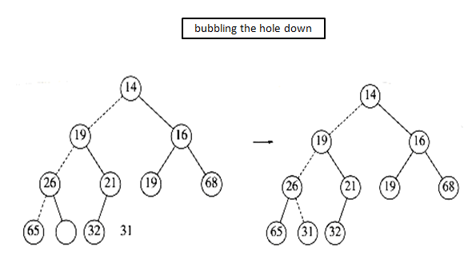

4.1 Priority Queues - Heaps
4.1.1 Need for Priority in Queues
Job Submitted to a printer
- Currently follows first in first out
- Performance can be improved by allowing important documents to get printed first
- Compared to 100-page document, one page document can be printed first so that overall waiting time can be reduced
Multi user environment in an operating system
- Preference can be given to short jobs, important jobs
4.1.2 Priority Queues - Definition
A priority queue is a data structure that supports two basic operations:
insert a new item - Enqueue
remove the minimum item - DeleteMin
- smaller value has higher priority
- Finds the minimum element and deletes it from structure and returns it
4.1.3 Priority Queues - Implementations
A simple linked list:
- Insertion at the front (O(1)); delete minimum (O(N)), or
- Keep list sorted; insertion O(N), deleteMin O(1)
A binary search tree:
- This gives an O(log N) average for both operations.
- But BST class supports a lot of operations that are not required
An array: Binary Heap
- Does not require links and will support both operations in O(log N) even in worst-cases.
4.1.4 Binary Heaps - Definition
The binary heap is the classic method used to implement priority queues which has following two properties
Structure Property
- A heap is a complete binary tree, represented as an array.
- A complete binary tree is a tree that is completely filled, with the possible exception of the bottom level, which is filled from left to right.
Heap Order Property
- In a heap, for every node X with parent P, value key in P is smaller than or equal to value in X.
- Thus minimum element is always at the root.
- findMin can be done in constant time i.e. O(1).
4.1.5 Complete Binary tree
- A complete binary tree of height h has between 2h and 2h+1 � 1 nodes
- The height of a complete binary tree is [log N].
- Since it is very much regular, it can be implemented as an array without any pointers such that:
- For any element in array position i :
- left child is in position 2i,
- right child is in the cell after the left child (2i + 1)
- parent is in position [ i/2 ].
Complete Binary tree - Example

Heap Order Property- Min Heap
Value key in Parent is smaller than or equal to value in child.

4.1.6 Priority Queue - Min Heap Operations
Insertion
To insert an element X into the heap:
We create a hole in the next available location.
If X can be placed there without violating the heap property, then we do so and are done.
Otherwise
- We bubble up the hole toward the root by sliding the element in the hole�s parent down.
- We continue this until X can be placed in the hole.
- This general strategy is known as a percolate up
Example
Deletion
To perform DeleteMin in a heap:
Remove the minimum; so, a hole is created at the root.
The last element X must move somewhere in the heap.
If X can be placed in the hole then we are done.
Otherwise
- We slide the smaller of the hole�s children into the hole, thus pushing the hole one level down.
- We repeat this until X can be placed in the hole.
- This strategy is called as a percolate down.

4.1.7 Priority Queue - Min Heap Implementation
Heap structure
max_heap_size � maximum size of array
size � Current number of elements in array>
Creating a priority queue
Insertion
Deletion